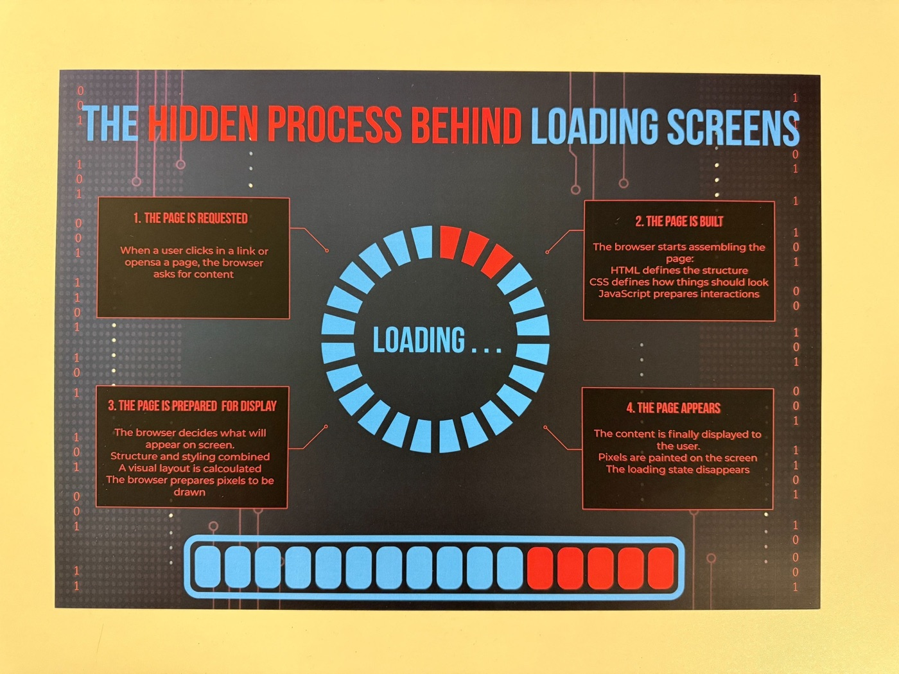
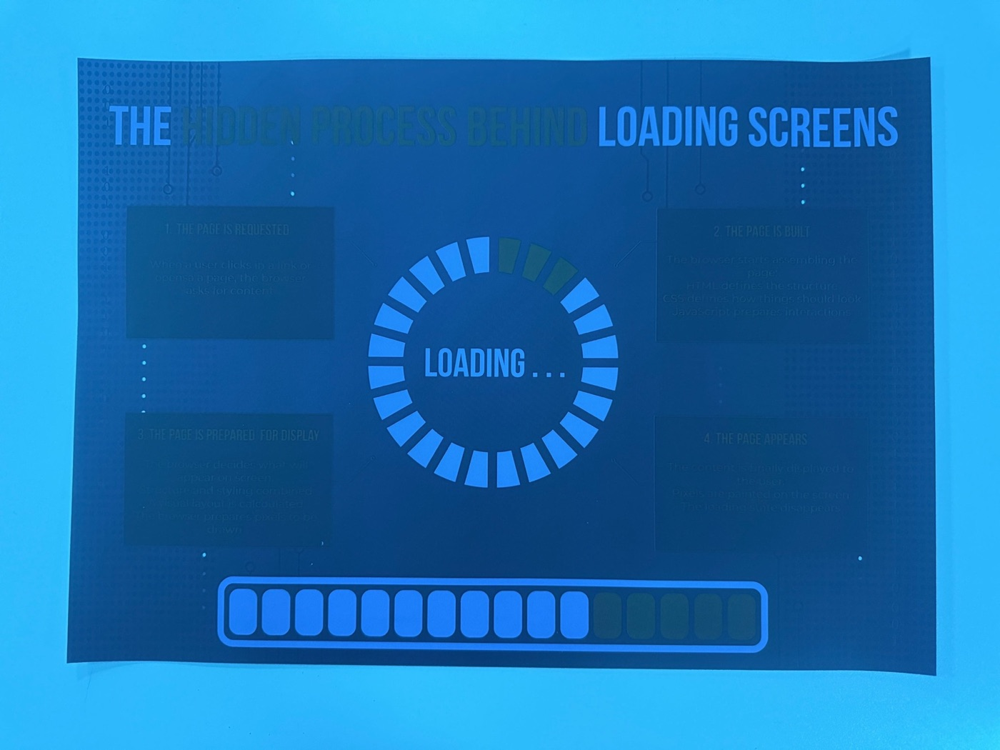
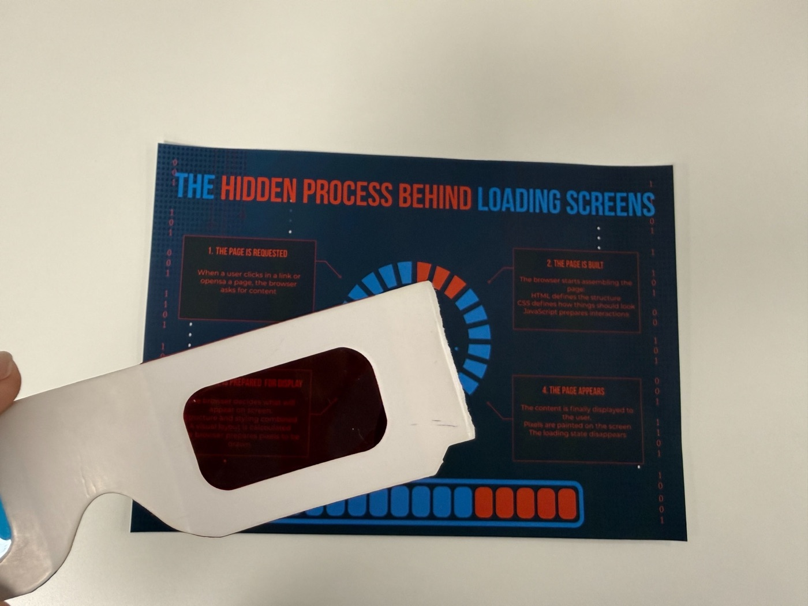
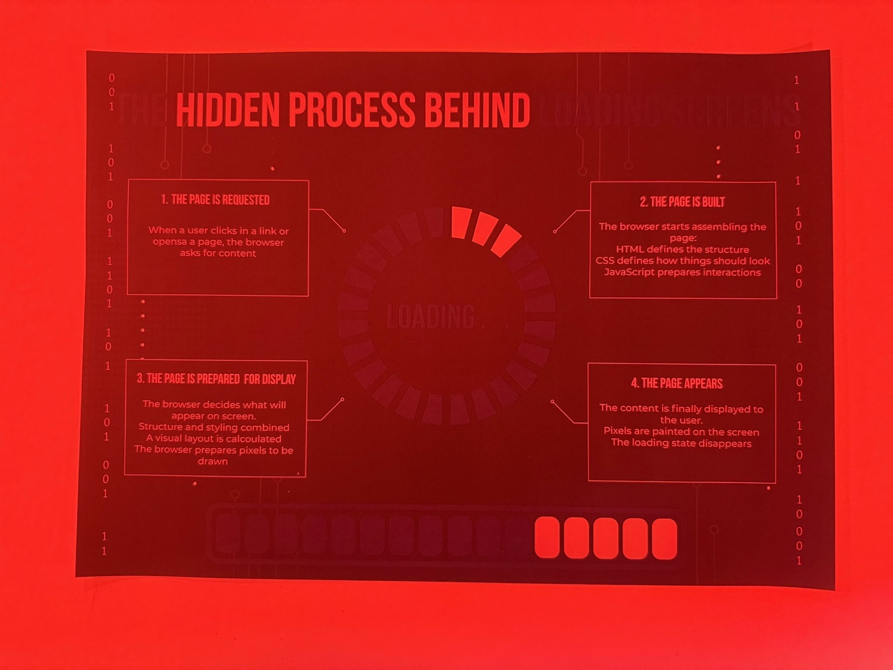
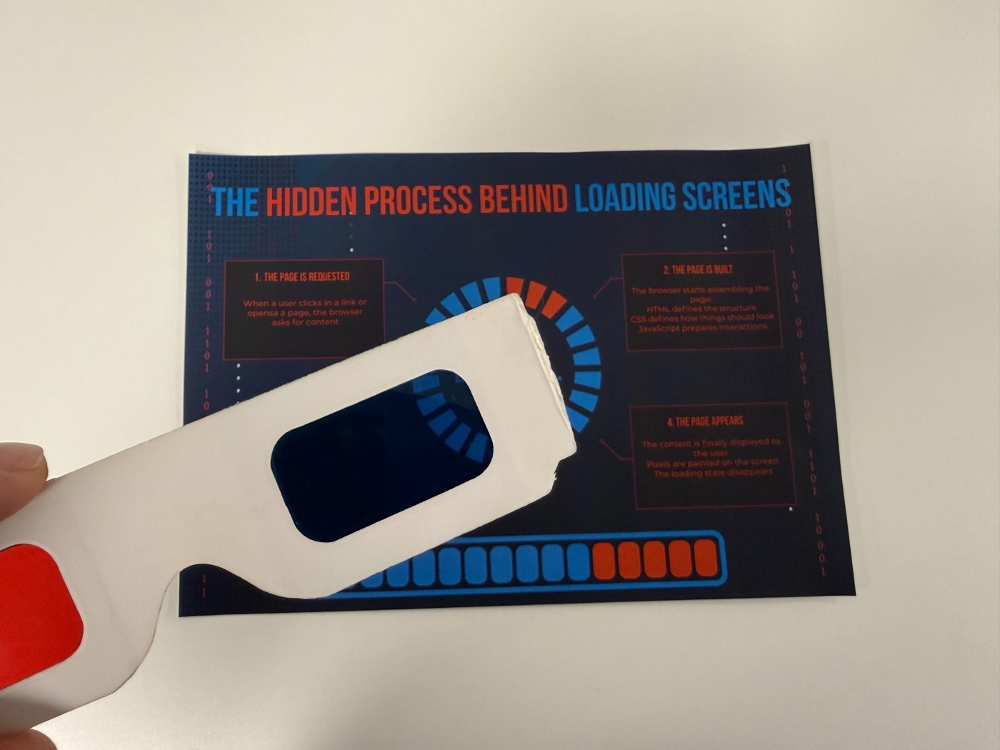

Making the Invisible Visible
An anaglyph poster that reveals what really happens behind a loading screen.
University project, BA (Hons) UX Design, London College of Communication (UAL).
Project overview
Year: 2025
Team: Solo
My role: Research, concept, sketching, information design, colour testing, print production
Output: Printed A3 poster + red/blue 3D glasses
The challenge
Every website makes us wait. Behind the spinner, the browser is requesting, building and painting the page, but users only ever see the pause. For students with no coding background, loading feels like nothing is happening at all. My goal was to turn that hidden process into something anyone can understand.
The solution
A poster with two layers printed in the same space. Red carries the invisible process: four steps the browser runs, plus binary code and circuit details. Blue carries what users already know: the loading spinner and progress bar. Seen with the naked eye, it’s one image. Through red/blue 3D glasses, each lens isolates one layer. The viewer physically switches between what they see and what the system is doing.
Process
Research. I mapped what actually happens during a page load (request, HTML/CSS/JavaScript, layout, paint) and how loading UI exists to reduce anxiety while users wait.
Ideation. My first concepts kept the two worlds apart: a double-sided poster, then a split layout. Both failed for the same reason. The visible and invisible happen at the same time, so separating them told the wrong story.
The pivot to anaglyph. Anaglyph images let two layers occupy one space and be pulled apart on demand, which was exactly the relationship I wanted to show.
Colour development. Testing with the glasses showed red reads more strongly than blue, so red went to the hidden content I wanted to highlight. I worked with the LCC digital print studio to set exact CMYK values for clean separation in print.
Outcome
A printed A3 poster that works at two levels: a single image at a glance, and two distinct stories through each lens. The format itself carries the message. You literally have to change how you look to see the hidden layer.




